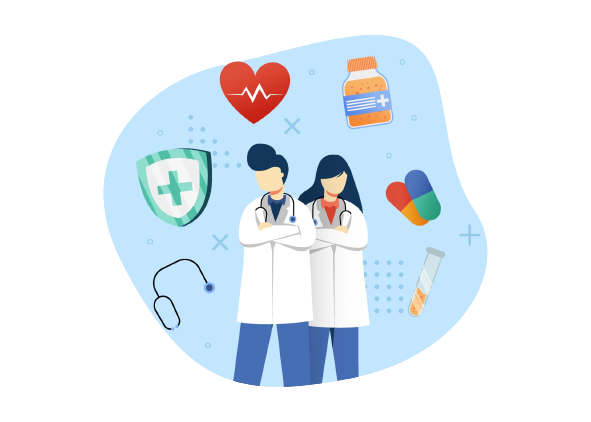
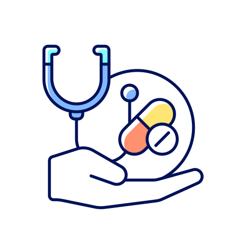

Une application médicale spécialement dédiée a vos patients
Disponible pour tous.
Elle convient particulièrement aux personnes avec une maladie ou une pathologie chronique, car elle simplifie le suivi de votre dossier médical,
que ce soit pour vous ou votre médecin.
Sa principale fonctionnalité étant vos rappels pour vos prises de médicaments et vos rendez-vous médicaux.
une meilleure sante est essentielle au bonheur, donc son suivi est vital...


